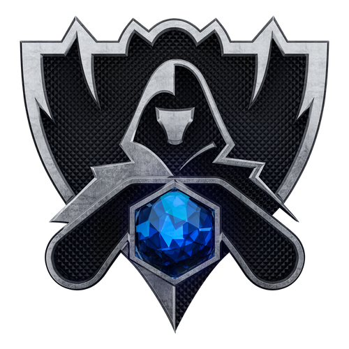
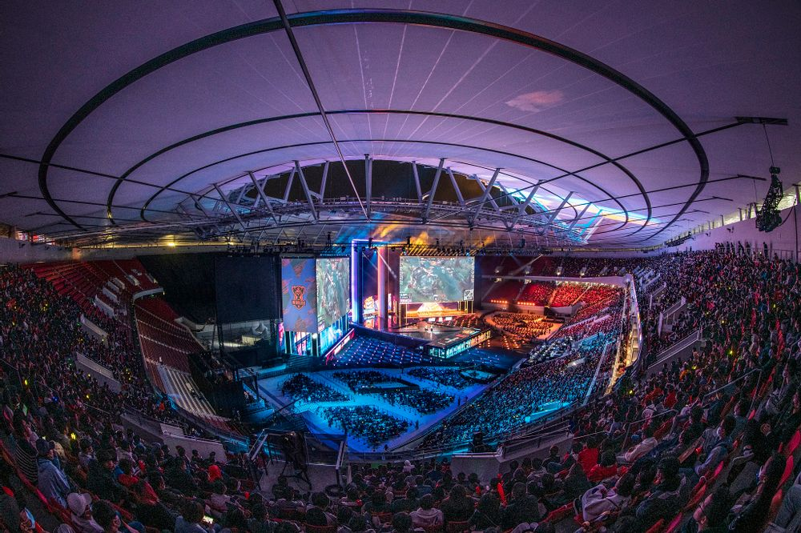

라이엇 게임즈가 직접 개최하는 LoL e스포츠의 시즌 결산 세계 대회이자, 세계 최대 규모의 리그 오브 레전드 대회이다.
리그 오브 레전드가 최대 규모의 e스포츠 시장을 가지고 있는 만큼 동시 접속 시청자 수와 시청 시간 부분에서 e스포츠 역사상 최고의 기록을 보유하고 있으며,
매 대회마다 신기록을 경신 중인 세계에서 가장 큰 e스포츠 대회이기도 하다.
공식 약칭은 Worlds. 전 세계 리그에서 상위 n개의 팀을 뽑아 토너먼트 방식으로 최강자를 가린다는 점에서 축구의 챔피언스 리그와 비교하는 쪽이 더 정확하겠지만,
한국에서는 '롤챔스' 라는 명칭을 당시 'Champions' 라는 이름으로 개최되던 LCK가 먼저 가져간 관계로
역시 축구에서 세계 1위팀을 뽑는 대회인 FIFA 월드컵에 빗대어 롤드컵이라는 별칭을 주로 사용하는데,
사실 축구에서도 대륙별 챔피언스 리그 우승팀을 모은 FIFA 클럽 월드컵이 있으므로 어긋나지는 않은 비유이다. 오랫동안 굳어온 별명이다 보니 많은 이들이 그냥 롤드컵이라고 부른다.
공식 석상에서는 월드 챔피언십, 혹은 줄임말인 월챔, 아니면 공식 그대로 월즈라고 부른다.
본래 도타 2의 상금 크라우드 펀딩 시스템을 까면서 '우리는 상금을 유저들에게 구걸하지 않는다'는 말까지 하며 크라우드 펀딩을 하지 않았으나,
2016 시즌부터 크라우드 펀딩 시스템을 도입하여 매년 롤드컵 기간에 맞춰 챔피언십 스킨을 출시한 뒤 해당 스킨 판매 수익의 일부를 상금에 보태고 있는데,
이 덕에 상금 규모가 천정부지로 뛰어올라 LoL e스포츠는 모든 것이 롤드컵을 위주로 돌아가게 되었다.
지역 리그 우승 금액과 최대 스무 배가 넘게 차이나는 어마어마한 상금 규모[3]덕에 극단적으로는 '지역 리그는 롤드컵 가는 티켓을 받기 위해 존재한다'는 주장도 나온다.
리그의 권위는 상금의 규모에서 나온다는 말에 맞게 선수들 커리어를 비교할때도 가장 중요하게 작용해서,
리그에서 한번도 우승 못했어도 월즈만 먹으면 장땡이고, 반대로 리그를 몇번이나 우승했어도 월즈를 한번도 못들어봤으면 최고급 선수 라인에 안껴주는,
그야말로 끝판왕급이라고 봐도 무방한 권위의 대회.
참가 팀은 시즌 1(2011년) 8개 팀, 시즌 2(2012년) 12개 팀, 시즌 3(2013년) 14개 팀,
2014 시즌 16개 팀, 2017 시즌 24개 팀으로 점점 증가하고 있다.
시즌 2에는 LCK와 LPL이 서킷 포인트제를 도입하였고, 그 뒤로 2014 시즌까지 LCK에서만 실시하였으나
2015 ~ 2019 시즌까지 5대 메이저 리그(LCK, LPL, LEC, LCS, LMS) 모두 서킷 포인트제를 통해 진출 팀을 가려냈다.
2020 시즌부터 LEC와 LCS는 서머 플레이오프가 롤드컵 선발전을 겸하도록 바뀌었다.